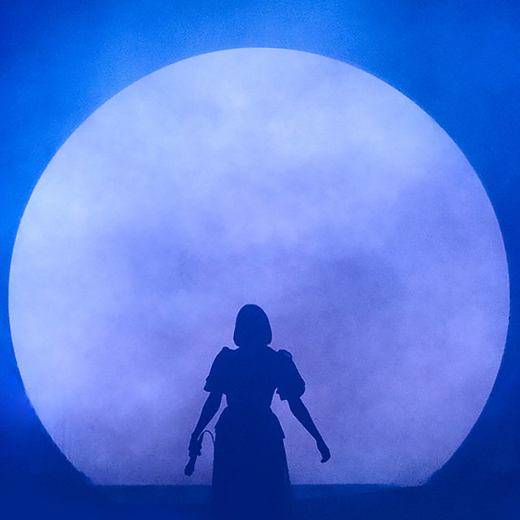

Aurora aksnes (15/06/1996) is a norwegian indie pop songwriter and singer that has an unique vocal and a whole self world that she introduces to us in her (yet) four albums. She brings into her lyrics many topics such as nature, how to embrace your feelings, fight for the world, feel safe and strong in your own skin, and of course, about love. I am very sure you'll get delighted with her songs.
Songs
Runaway
Conqueror
Running With the Wolves
Lucky
Winter Bird
I Went Too Far
Through the Eyes of a Child
Warrior
Murder Song (5,4,3,2,1)
Home
Under the Water
Black Water Lilies
Half the World Away
Murder Song (5,4,3,2,1) [Acoustic]
Nature Boy [Acoustic]
Wisdom Cries
Running With the Wolves (Pablo Nouvelle Remix)
Songs
Queendom
Forgotten Love
Gentle Earthquakes
All is Soft Inside
It Happened Quiet
Churchyard
Soft Universe
Infections Of A Different Lind
Songs
The River
Animal
Dance On the Moon
Daydreamer
Hunger
Souless Creatures
In Bottles
A Different Kind of Humans
Apple Tree
The Seed
Mothership
Songs
The Forbidden Fruits Of Eden
Everything Matters (Feat. Pomme)
Giving In To the Love
Cure For Me
You Keep Me Crawling
Exist For Love
Heathens
The Innocent
Exhale Inhale
A Temporary High
A Dangerous Thing
Artemis
Blood In the Wine
This Could Be A Dream
A little Place Called the Moon
Bonus Song
Potion For Love
